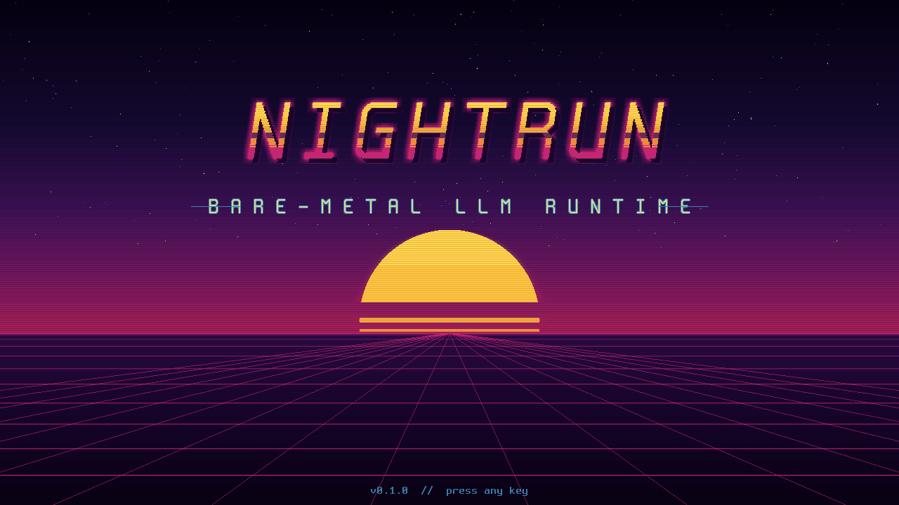
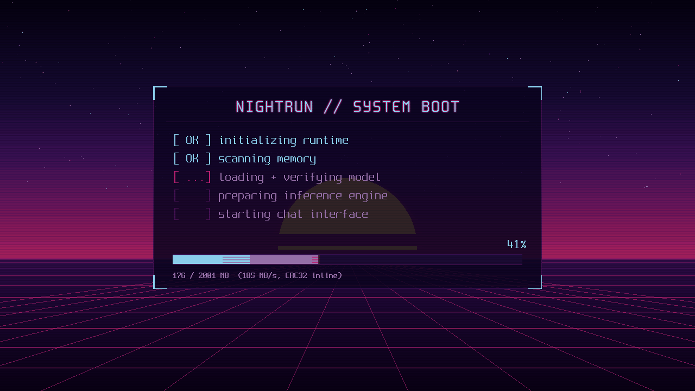
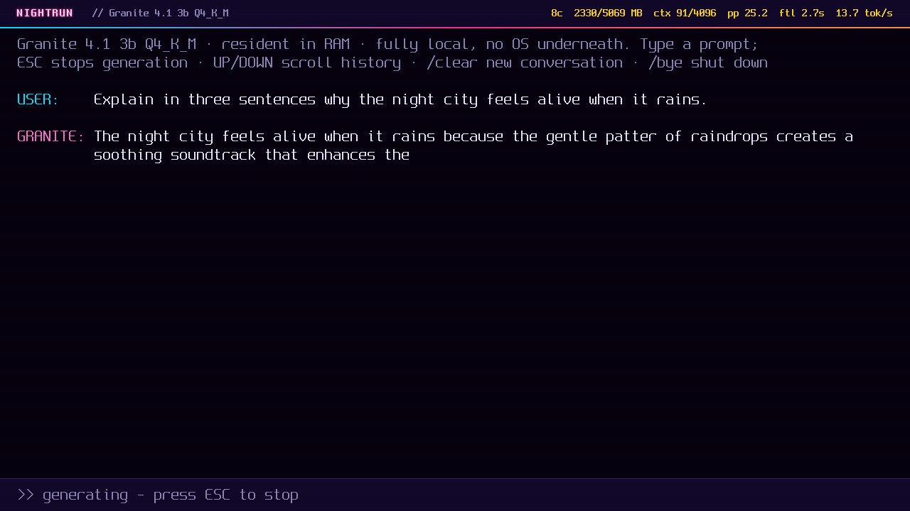
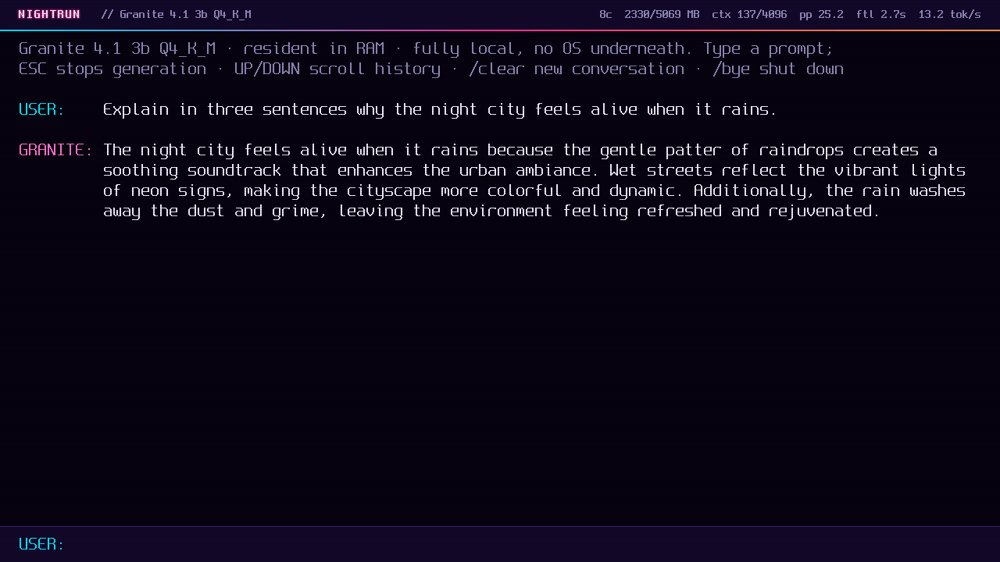
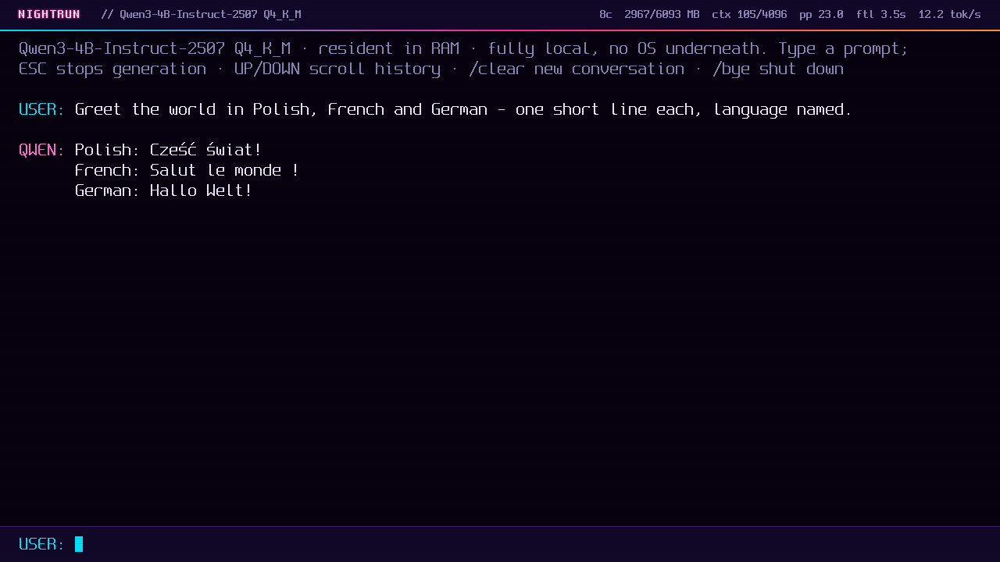

An LLM runtime that boots from USB and runs without a conventional operating system.
NightRun is a UEFI-resident runtime written in Rust: your machine's firmware starts it directly, it loads a language model entirely into RAM, and you chat on the framebuffer. No Linux, no Windows, no kernel, no network, on x86_64 PCs and the Raspberry Pi 5.
Install NightRun View Architecture GitHub//Quick start
This is weird software. It boots straight into an LLM. Here is the fastest way to see it:
curl -fsSL https://nightrun.io/install-nightrun.sh | shThe one-liner only clones the repository and starts the interactive installer (inspect the script first). It builds a bootable image for your target (x86_64 USB or Raspberry Pi 5 SD card), downloads and verifies a model, and flashes removable media with an exact typed confirmation before anything destructive. Prefer to clone yourself or go fully manual? All paths are on the Install page.
//What is NightRun?
Boots from USB
A single UEFI application started directly by the firmware: no bootloader chain, no kernel, no init system.
Model resident in RAM
The whole model (1.3–2.4 GB) is copied into memory with inline CRC-32 verification; afterwards storage is sealed and never read again.
No conventional OS
No Linux userspace, no services, no scheduler beneath the runtime. NightRun deliberately stays on UEFI Boot Services for hardware compatibility.
Local CPU inference
Quantized weights (Q1_0, PQ2_0, Q8_0, Q4_K, Q6_K) are used in place by hand-written AVX2 and NEON kernels: no unpacking pass, no allocations in the generation loop.
Custom Rust runtime
no_std crates for tensors, tokenizer, model format, graphics and UI; the same engine code runs on the host for testing.
Framebuffer chat
NightRun draws its own terminal: instant message echo, a thinking cursor, streaming output, scrollback, caret editing, /clear and /bye.
Reference-validated
Greedy output is pinned token-for-token against llama.cpp for every supported model family, on every change.
Two real targets
x86_64 UEFI machines via USB, and the Raspberry Pi 5 via SD card, including driving the Pi's fan, since no OS is around to do it.
Offline by construction
There is no network stack in the runtime. After the model loads, nothing enters or leaves the machine.
//The runtime, running





//How it works
- USB / SD boot the firmware starts BOOTX64.EFI or BOOTAA64.EFI
- NightRun starts framebuffer, keyboard, all CPU cores as workers
- Model loads fully into RAM checksummed while streaming; storage sealed after
- Tokenizer + KV cache initialize preallocated arenas; no allocation at runtime
- Local chat begins batched prompt prefill, token-by-token decode
//Supported models
| Model | Quantization | Size | Runs on |
|---|---|---|---|
| Llama 3.2 1B Instruct | Q8_0 | 1.3 GB | x86_64 · Pi 5 |
| Llama 3.2 3B Instruct | Q4_K_M | 1.9 GB | x86_64 · Pi 5 |
| Granite 4.1 3B | Q4_K_M | 2.0 GB | x86_64 · Pi 5 |
| Ternary Bonsai 8B (PrismML) | PQ2_0 (ternary) | 2.1 GB | x86_64 · Pi 5 (8 GB+) |
| Qwen3 4B Instruct 2507 | Q4_K_M | 2.4 GB | x86_64 · Pi 5 (8 GB boards) |
Supported tensor quantizations are Q1_0, PQ2_0, Q8_0, Q4_K and Q6_K (plus F32 norms), so GGUF builds like Q1_0, PQ2_0, Q8_0, Q4_K_M, Q4_K_S and Q6_K convert with each tensor's exact quantization preserved. Granite support covers the conventional dense transformer release only; hybrid (SSM/MoE) Granite variants are detected and rejected at conversion. NightRun does not claim arbitrary GGUF compatibility: models pass metadata inspection, conversion validation, and reference testing before joining this table.
//Measured performance
| Model | Quant | Prompt | Decode | Hardware |
|---|---|---|---|---|
| Llama 3.2 1B | Q8_0 | 52 tok/s | ~20 tok/s | QEMU/KVM, 8 cores, AVX2 |
| Granite 4.1 3B | Q4_K_M | 25 tok/s | ~13 tok/s | QEMU/KVM, 8 cores, AVX2 |
| Qwen3 4B | Q4_K_M | 21 tok/s | ~10 tok/s | QEMU/KVM, 8 cores, AVX2 |
| Granite 4.1 3B | Q4_K_M | 6.2 tok/s | 3.0 tok/s | Raspberry Pi 5 (8 GB), 4 cores, NEON* |
Prompt = batched prefill throughput; decode = interactive generation, measured on short contexts. Decode slows as the context fills: attention reads the whole KV cache every token (measured: Granite ~13 tok/s early falls to ~11.6 tok/s averaged over a 384-token generation; still fluid, plainly slower). All numbers are from the repository's benchmark logs under stated conditions; none are projections. *The Pi figure predates the ARM dot-product (sdot) kernels now in the tree. NightRun does not claim to be globally faster than llama.cpp; see the benchmark methodology.
//Built with a coding agent
Most of the code was written with Claude Code using the Fable 5 model. That is part of the point: NightRun is also a test of how far a coding agent can be pushed when the target is a bootable systems project with hard correctness and safety requirements. The methodology stayed boring on purpose: reference implementations for every kernel, token-for-token parity gates against llama.cpp, adversarial parser tests, and an installer that proves it will not eat the wrong disk.
Judge it like normal software: does it boot, does it run, does it validate, and does the code make sense. The README has the longer version.